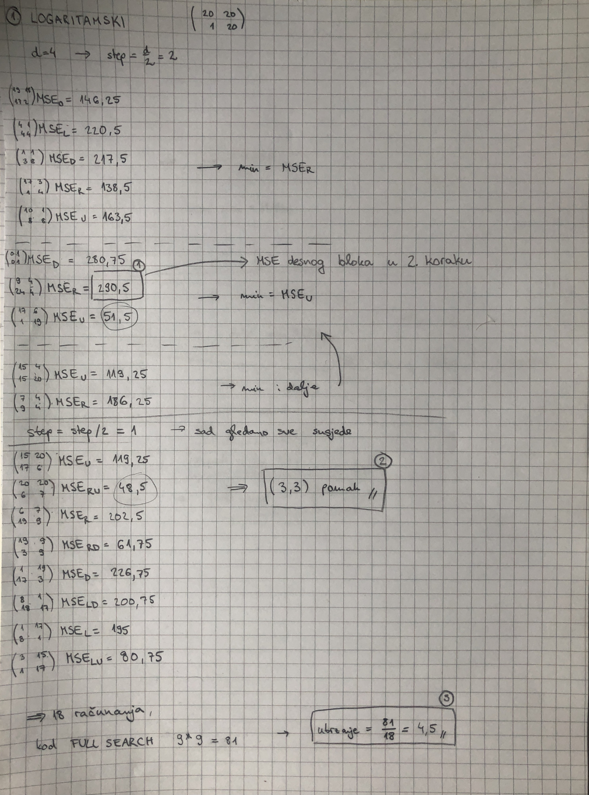
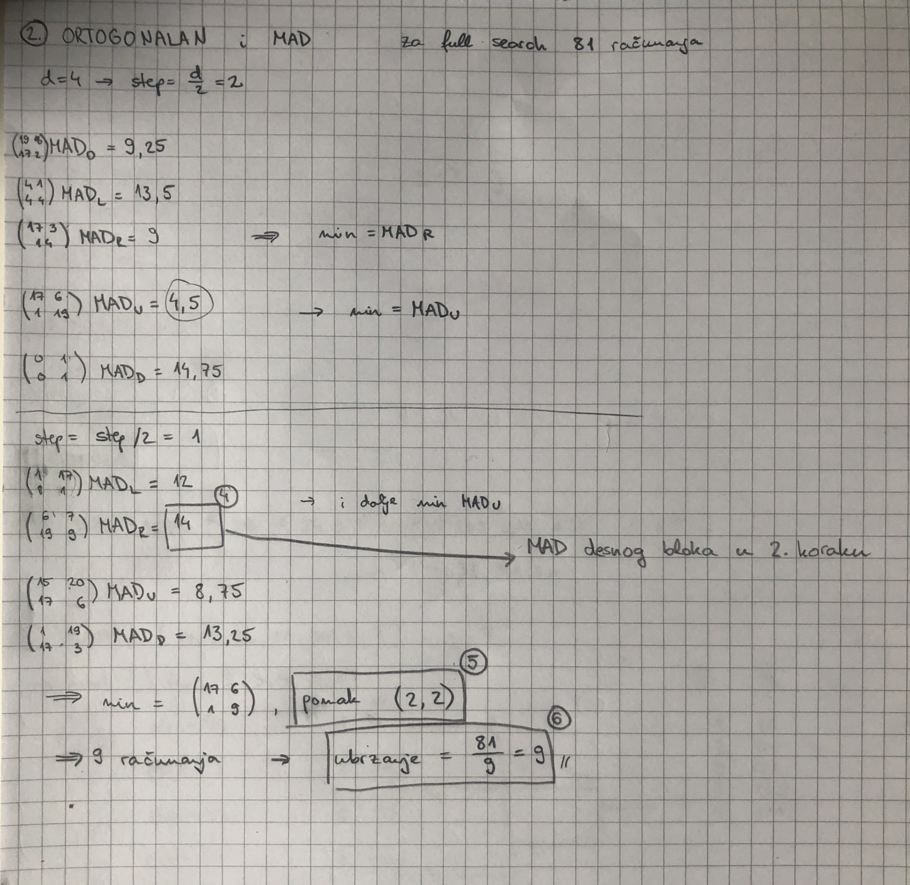
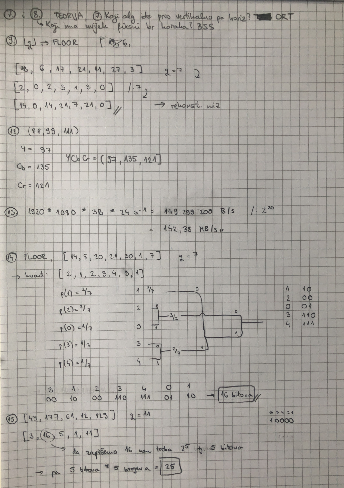

Hoćemo li ove godine smjeti imati prezentacije na ispitu? Lani je bilo dopušteno, ali ove godine nemamo obavijest na stranici predmeta o tome.
post Vjerujem da će u ponedjeljak staviti obavijest, ali ne vidim zašto bi bilo da su mogli prošle godine, a ne ove
Ako sam dobro shvatio iz proslih ispita, vamo sve od MAS4 prezentacije (uključivo) ni ne ulazi u ispit? Samo se ispituju algoritmi iz ovih prijasnjih prezentacija
balvan daj skrolaj malo po threadu kojeg spominješ, linkan je nekoliko puta, pa i danas
se isplati uopce printat preze? jel pomoglo na prosloj god?
MyKnee Da lol ak nešto ne znaš sam pogledaš
Al ne trebaš sve printati, ja sam npr. svojevremeno napravio sažetak, izbacio neke nepotrebne stvari: https://github.com/Yalfoosh/MAIS/tree/main/izlaganja/predavanja/2020-21
A na materijalima imaš i što je kolega uploadao, sve prezentacije 4 po stranici
Odgovori za D inačicu su (po meni) redom:
Karlovsky120
Karlovsky120 koliko se sjećam, meni su skoro isti odgovori za A inačicu (ne D). Jedino sam u brzini dobio negdje 138 MB/s? Ima netko iz A da potvrdi?
vandal Sta nije da je full search definiran nad ovim vidljivim ekranom? Po tome bi mogli ic i u ostalim smjerovima za 1
Full search je ili 9×9 ili 11×11, 10×10 nema smisla.
8 bita po boji * 3 boje po pixelu * (1080 * 1920) pixela po slici * 24 slike po sekundi = 1194393600 bita po sekundi Što je 1.14Gb/s, tj. 142.38MB/s.
Pas mater.
Molim admine ili nekoga da pobriše s docsa neispravno računanje ORT i LOG algoritama. Od one silne rasprave koja stoji tamo i koja se nakupljala godinama ja sam krivo naučio i riješio ispit.
Audaces mislim imaš algoritam rješavanja na slajdovima
Audaces To nisu materijali vezani uz forum, jedino ak je to netko stavio na github materijale, tak da trebaš nać nekog tko uređuje taj dokument…
Jesu sve inačice imala ista pitanja ili je možda par pitanja bilo različito?
Evo za buduce generacije - iz ovih rjesenja meduispita i google docsa mozete skuziti koja su bila pitanja + sva rjesenja su tocna, zivjeli!
  
keykey Jel se sjećaš jel u MI za ORT i LOG lagoritam bilo polje 10×10 pa je za full search 9×9 računanja?
member bilo je 10*10 polje